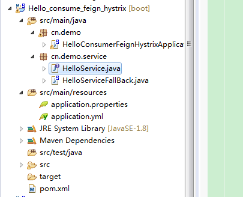

第一：关于服务调用和熔断安全：
ribbon和Feign:
1. 相当于nigx+doubbe，微服务间的服务调用，API网关的请求转发等内容
2. Feign整合了Ribbon和Hystrix
Hystrix：
1. 断路器：
2. 熔断模式.
3. 隔离模式
4. 限流模式
在微服务场景中，通常会有很多层的服务调用。如果一个底层服务出现问题，故障会被向上传播给用户。
当底层服务不可用时，可以阻断故障的传播。
为什么需要 Hystrix?
hystrix主要是用来防止服务雪崩效应的。
在微服务架构中，我们将业务拆分成一个个的服务，服务与服务之间可以相互调用（RPC）。为了保证其高可用，单个服务又必须集群部署。由于网络原因或者自身的原因，服务并不能保证服务的100%可用，如果单个服务出现问题，调用这个服务就会出现网络延迟，此时若有大量的网络涌入，会形成任务累计，导致服务瘫痪，甚至导致服务“雪崩”。为了解决这个问题，就出现断路器模型。
Hystrix 是一个帮助解决分布式系统交互时超时处理和容错的类库, 它同样拥有保护系统的能力.什么是服务雪崩
分布式系统中经常会出现某个基础服务不可用造成整个系统不可用的情况, 这种现象被称为服务雪崩效应. 为了应对服务雪崩, 一种常见的做法是手动服务降级. 而Hystrix的出现,给我们提供了另一种选择.
1.流量控制
2.改进缓存模式
3.服务自动扩容
4.服务调用者降级服务
引用自：https://www.cnblogs.com/xyhero/p/53852cf0245c229fe3e22756a220508b.html
pom:
<dependency>
<groupId>org.springframework.boot</groupId>
<artifactId>spring-boot-starter-web</artifactId>
</dependency>
<dependency>
<groupId>org.springframework.cloud</groupId>
<artifactId>spring-cloud-starter-eureka</artifactId>
</dependency>
<dependency>
<groupId>org.springframework.cloud</groupId>
<artifactId>spring-cloud-starter-ribbon</artifactId>
</dependency>
<dependency>
<groupId>org.springframework.cloud</groupId>
<artifactId>spring-cloud-starter-hystrix</artifactId>
</dependency>
<dependency>
<groupId>org.springframework.boot</groupId>
<artifactId>spring-boot-starter-test</artifactId>
<scope>test</scope>
</dependency>application.properties:
spring.application.name=hello-consumer-ribbon-hystrix
server.port=8041
eureka.client.serviceUrl.defaultZone=http://localhost:8001/eureka/HelloService:
package cn.demo.service;
import com.netflix.hystrix.contrib.javanica.annotation.HystrixCommand;
import com.netflix.hystrix.contrib.javanica.annotation.HystrixProperty;
import org.springframework.beans.factory.annotation.Autowired;
import org.springframework.stereotype.Service;
import org.springframework.web.client.RestTemplate;
@Service
public class HelloService {
@Autowired
private RestTemplate restTemplate;
@HystrixCommand(fallbackMethod = "fallback", commandProperties = {
@HystrixProperty(name= "execution.isolation.thread.timeoutInMilliseconds", value="2000")
})
public String hello (String name) {
return restTemplate.getForEntity("http://USER-SERVICE/hello?name=" + name, String.class).getBody();
}
public String fallback (String name) {
return "hello, hystrix熔断启动=== fail name:" + name;
}
}HelloConsumerRibbonHystrixApplication:
package cn.demo;
import org.springframework.beans.factory.annotation.Autowired;
import org.springframework.boot.SpringApplication;
import org.springframework.boot.autoconfigure.SpringBootApplication;
import org.springframework.cloud.client.discovery.EnableDiscoveryClient;
import org.springframework.cloud.client.loadbalancer.LoadBalanced;
import org.springframework.cloud.netflix.hystrix.EnableHystrix;
import org.springframework.context.annotation.Bean;
import org.springframework.web.bind.annotation.RequestMapping;
import org.springframework.web.bind.annotation.RestController;
import org.springframework.web.client.RestTemplate;
import cn.demo.service.HelloService;
@SpringBootApplication
@EnableDiscoveryClient
@EnableHystrix
@RestController
public class HelloConsumerRibbonHystrixApplication {
public static void main(String[] args) {
SpringApplication.run(HelloConsumerRibbonHystrixApplication.class, args);
}
@Bean
@LoadBalanced
public RestTemplate restTemplate () {
return new RestTemplate();
}
@Autowired
private HelloService helloService;
@RequestMapping("hello")
public String hello (String name) {
return helloService.hello(name);
}
}测试：
启动eureka-server:8001, hello-service:8012,8002，hello-consumer-ribbon-hystrix:8041
访问：http://localhost:8041/hello?name=ribbon_hystrix
返回：hello, ribbon_hystrix
访问正常，接下来我们把hello-service服务停了，再次访问：
返回：hello, hystrix熔断启动=== fail name:ribbon_hystrix
------成功触发熔断。
然后我们再次启动hello-service服务，然后访问：
hello, ribbon_hystrix
没有触发熔断，正常。
同样我们测试访问超时触发熔断的情况，我们在hello-service接口加上线程等待1s：
@RequestMapping("hello")
public String hello (String name) throws InterruptedException {
Thread.sleep(1000);
System.out.println("hello, " + name);
return "hello, " + name;
}访问，发现同样触发熔断，因为hystrix默认超时1s触发熔断，我们可以通过修改属性来改变超时时间。
这里我们把超时时间修改为2s：
@HystrixCommand(fallbackMethod = "fallback", commandProperties = {
@HystrixProperty(name= "execution.isolation.thread.timeoutInMilliseconds", value="2000")
})
public String hello (String name) {
return restTemplate.getForEntity("http://HELLO-SERVICE/hello?name=" + name, String.class).getBody();
}
再次访问，发现没有触发熔断。
Feign默认是自带Hystrix的，所以依赖Jar的时候无需再依赖hystrix

pom.xml
<dependency>
<groupId>org.springframework.boot</groupId>
<artifactId>spring-boot-starter-web</artifactId>
</dependency>
<dependency>
<groupId>org.springframework.cloud</groupId>
<artifactId>spring-cloud-starter-eureka</artifactId>
</dependency>
<dependency>
<groupId>org.springframework.cloud</groupId>
<artifactId>spring-cloud-starter-feign</artifactId>
</dependency>application.properties：
spring.application.name=hello-consumer-feign-hystrix
server.port=8051
eureka.client.serviceUrl.defaultZone=http://localhost:8001/eureka/
## 开启hystrix
feign.hystrix.enabled=true
## hystrix熔断触发默认超时时间
hystrix.command.default.execution.isolation.thread.timeoutInMilliseconds=2000HelloService：
import org.springframework.cloud.netflix.feign.FeignClient;
import org.springframework.web.bind.annotation.RequestMapping;
import org.springframework.web.bind.annotation.RequestParam;
@FeignClient(value = "hello-service", fallback = HelloServiceFallBack.class)
public interface HelloService {
@RequestMapping("hello")
String hello(@RequestParam(value = "name") String name) ;
}熔断触发类HelloServiceFallBack：
import org.springframework.stereotype.Component;
@Component
public class HelloServiceFallBack implements HelloService{
@Override
public String hello(String name) {
return "hello, hystrix 触发熔断 == fail name : " + name;
}
}
启动类：
import cn.saytime.service.HelloService;
import org.springframework.beans.factory.annotation.Autowired;
import org.springframework.boot.SpringApplication;
import org.springframework.boot.autoconfigure.SpringBootApplication;
import org.springframework.cloud.client.discovery.EnableDiscoveryClient;
import org.springframework.cloud.netflix.feign.EnableFeignClients;
import org.springframework.web.bind.annotation.RequestMapping;
import org.springframework.web.bind.annotation.RestController;
@SpringBootApplication
@EnableDiscoveryClient
@EnableFeignClients
@RestController
public class HelloConsumerFeignHystrixApplication {
public static void main(String[] args) {
SpringApplication.run(HelloConsumerFeignHystrixApplication.class, args);
}
@Autowired
private HelloService helloService;
@RequestMapping("hello")
public String hello(String name){
return helloService.hello(name);
}
}测试：
启动eureka-server:8001, hello-service:8011，hello-consumer-feign-hystrix:8051
访问：http://localhost:8051/hello?name=feign_hystrix
接下来关闭hello-service服务，再次访问：
将hello-service服务重新启动，访问正常，没有触发熔断。
将hello-service服务接口加上线程等待3s，重启hello-service服务，再次调用，同样成功触发熔断
修改application.properties里面熔断超时时间为4s，再次调用，没有触发熔断。
ribbon-hystrix 与 feign-hystrix 两个项目的pom文件都添加以下依赖：
<dependency>
<groupId>org.springframework.boot</groupId>
<artifactId>spring-boot-starter-actuator</artifactId>
</dependency>
<dependency>
<groupId>org.springframework.cloud</groupId>
<artifactId>spring-cloud-starter-hystrix-dashboard</artifactId>
</dependency>启动类都加上如下注解： @EnableHystrixDashboard
然后访问
http://localhost:8041/hystrixhttp://localhost:8051/hystrix
输入链接：http://localhost:8041/hystrix.stream
同理，如果是feign-hystrix项目，输入 http://localhost:8051/hystrix.stream
点击Monitor Stream
然后我们访问一下 http://localhost:8041/hello?name=ribbon_hystrix
会出现如下监控页面：
这个微服务监控如何查看监控结果。
图中实心圆共有两种含义，他通过颜色的变化代表了实例的健康程度，它的健康度颜色从绿色<黄色<橙色<红色递减。
该实心圆除了颜色的变化之外，它的大小也会根据实例的请求流量发生变化，流量越大该实心圆就越大。所以通过该实心圆的展示可以在大量的实例中快速的发现故障实例和高压力实例。